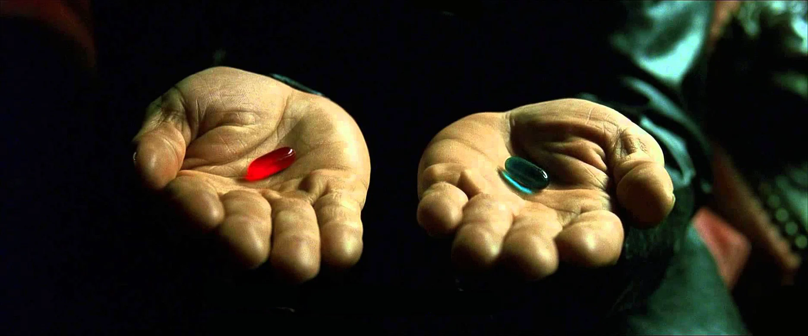

On a parlé précédemment de modérer son plaisir et son déplaisir.
J’ai expliqué pourquoi l’orgasme devait être évité au maximum ; c’est un peu comme s’il remplissait la jauge à 100% de plaisir d’un seul coup.
A première vue on peut se dire que c’est parfait, c’est ce qu’on cherche, être heureux comme ça, une fois chaque jour, mais c’est plus complexe que ça.
Ce 100% de plaisir pendant quelques secondes nous rend inapte à expérimenter la même sensation le même jour ou le jour suivant avec le même stimulus.
Pour résumer tout ça en une phrase :
On échange le bonheur de chaque jour pour un bref instant d’une seule journée.
C’est déprimant non ? Mais c’est la vérité…
Maintenez vous avez le choix :
Vous pouvez continuez vos vieilles habitudes qui ne vous ont jamais réellement rendu heureux.
Acceptez votre nature d’homme et devenez enfin lucide.
Généralement si vous sentez que vous vous ennuyez ou que vous savez pas quoi faire, c'est que vous n'avez pas assez de déplaisir.
A ce moment-là, c'est le signe qu'il faut se sortir les doigts et faire quelque chose de concret.
Le sport, comme la musculation peut-être un très bon moyen de stabiliser la jauge en cas d’excès de plaisir.